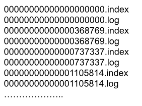
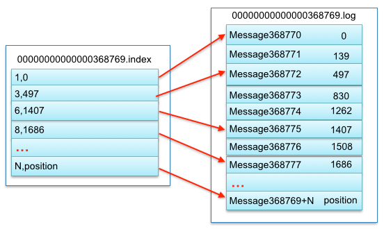

<!DOCTYPE HTML>
<html lang="" >
    <head>
        <meta charset="UTF-8">
        <meta content="text/html; charset=utf-8" http-equiv="Content-Type">
        <title>Kafka · GitBook</title>
        <meta http-equiv="X-UA-Compatible" content="IE=edge" />
        <meta name="description" content="">
        <meta name="generator" content="GitBook 3.2.3">
        
        
        

    
    <link rel="stylesheet" href="../../gitbook/style.css">

    
            
                
                <link rel="stylesheet" href="../../gitbook/gitbook-plugin-intopic-toc/style.css">
                
            
                
                <link rel="stylesheet" href="../../gitbook/gitbook-plugin-chapter-fold/chapter-fold.css">
                
            
                
                <link rel="stylesheet" href="../../gitbook/gitbook-plugin-splitter/splitter.css">
                
            
                
                <link rel="stylesheet" href="../../gitbook/gitbook-plugin-expandable-chapters/expandable-chapters.css">
                
            
                
                <link rel="stylesheet" href="../../gitbook/gitbook-plugin-back-to-top-button/plugin.css">
                
            
                
                <link rel="stylesheet" href="../../gitbook/gitbook-plugin-anchor-navigation-ex/style/plugin.css">
                
            
                
                <link rel="stylesheet" href="../../gitbook/gitbook-plugin-mermaid-v8/mermaid/mermaid.css">
                
            
                
                <link rel="stylesheet" href="../../gitbook/gitbook-plugin-highlight/website.css">
                
            
                
                <link rel="stylesheet" href="../../gitbook/gitbook-plugin-search/search.css">
                
            
                
                <link rel="stylesheet" href="../../gitbook/gitbook-plugin-fontsettings/website.css">
                
            
        

    

    
        
    
        
    
        
    
        
    
        
    
        
    


        
    
    
    <meta name="HandheldFriendly" content="true"/>
    <meta name="viewport" content="width=device-width, initial-scale=1, user-scalable=no">
    <meta name="apple-mobile-web-app-capable" content="yes">
    <meta name="apple-mobile-web-app-status-bar-style" content="black">
    <link rel="apple-touch-icon-precomposed" sizes="152x152" href="../../gitbook/images/apple-touch-icon-precomposed-152.png">
    <link rel="shortcut icon" href="../../gitbook/images/favicon.ico" type="image/x-icon">

    
    <link rel="next" href="../Rabbitmq/RabbitMQ.html" />
    
    

    </head>
    <body>
        
<div class="book">
    <div class="book-summary">
        
            
<div id="book-search-input" role="search">
    <input type="text" placeholder="Type to search" />
</div>

            
                <nav role="navigation">
                


<ul class="summary">
    
    

    

    
        
        
    
        <li class="chapter " data-level="1.1" data-path="../../">
            
                <a href="../../">
            
                    
                    Introduction
            
                </a>
            

            
        </li>
    
        <li class="chapter " data-level="1.2" >
            
                <span>
            
                    
                    知识脑图
            
                </span>
            

            
            <ul class="articles">
                
    
        <li class="chapter " data-level="1.2.1" >
            
                <a target="_blank" href="https://www.processon.com/view/link/6064961d6376891a06bbe35e">
            
                    
                    Java 虚拟机相关
            
                </a>
            

            
        </li>
    

            </ul>
            
        </li>
    
        <li class="chapter " data-level="1.3" data-path="../../java/">
            
                <a href="../../java/">
            
                    
                    Java
            
                </a>
            

            
            <ul class="articles">
                
    
        <li class="chapter " data-level="1.3.1" >
            
                <span>
            
                    
                    JDK 源码分析
            
                </span>
            

            
            <ul class="articles">
                
    
        <li class="chapter " data-level="1.3.1.1" >
            
                <span>
            
                    
                    JUC
            
                </span>
            

            
            <ul class="articles">
                
    
        <li class="chapter " data-level="1.3.1.1.1" data-path="../../java/jdk/juc/AbstractQueuedSynchronizer.html">
            
                <a href="../../java/jdk/juc/AbstractQueuedSynchronizer.html">
            
                    
                    AbstractQueueSynchronized 源码分析
            
                </a>
            

            
        </li>
    
        <li class="chapter " data-level="1.3.1.1.2" data-path="../../java/jdk/juc/ConcurrentHashMap.html">
            
                <a href="../../java/jdk/juc/ConcurrentHashMap.html">
            
                    
                    ConcurrentHashMap 源码分析
            
                </a>
            

            
        </li>
    
        <li class="chapter " data-level="1.3.1.1.3" data-path="../../java/jdk/juc/FutureTask.html">
            
                <a href="../../java/jdk/juc/FutureTask.html">
            
                    
                    FutureTask 源码分析
            
                </a>
            

            
        </li>
    
        <li class="chapter " data-level="1.3.1.1.4" data-path="../../java/jdk/juc/ReetrantLock.html">
            
                <a href="../../java/jdk/juc/ReetrantLock.html">
            
                    
                    ReetrantLocak 源码分析
            
                </a>
            

            
        </li>
    
        <li class="chapter " data-level="1.3.1.1.5" data-path="../../java/jdk/juc/ThreadPoolExecutor.html">
            
                <a href="../../java/jdk/juc/ThreadPoolExecutor.html">
            
                    
                    ThreadPoolExecutor 源码分析
            
                </a>
            

            
        </li>
    
        <li class="chapter " data-level="1.3.1.1.6" data-path="../../java/jdk/juc/BlockingQueue.html">
            
                <a href="../../java/jdk/juc/BlockingQueue.html">
            
                    
                    BlockingQueue 类族
            
                </a>
            

            
        </li>
    
        <li class="chapter " data-level="1.3.1.1.7" data-path="../../java/jdk/juc/SynchronousQueue.html">
            
                <a href="../../java/jdk/juc/SynchronousQueue.html">
            
                    
                    SynchronousQueue
            
                </a>
            

            
        </li>
    
        <li class="chapter " data-level="1.3.1.1.8" data-path="../../java/jdk/juc/CountDownLatch.html">
            
                <a href="../../java/jdk/juc/CountDownLatch.html">
            
                    
                    CountDownLatch 源码分析
            
                </a>
            

            
        </li>
    
        <li class="chapter " data-level="1.3.1.1.9" data-path="../../java/jdk/juc/CyclicBarrier.html">
            
                <a href="../../java/jdk/juc/CyclicBarrier.html">
            
                    
                    CyclicBarrier 源码分析
            
                </a>
            

            
        </li>
    
        <li class="chapter " data-level="1.3.1.1.10" data-path="../../java/jdk/juc/CopyOnWriteArrayList.html">
            
                <a href="../../java/jdk/juc/CopyOnWriteArrayList.html">
            
                    
                    CopyOnWriteArrayList 源码分析
            
                </a>
            

            
        </li>
    
        <li class="chapter " data-level="1.3.1.1.11" data-path="../../java/jdk/juc/CopyOnWriteArraySet.html">
            
                <a href="../../java/jdk/juc/CopyOnWriteArraySet.html">
            
                    
                    CopyOnWriteArraySet 源码分析
            
                </a>
            

            
        </li>
    
        <li class="chapter " data-level="1.3.1.1.12" data-path="../../java/jdk/juc/ConcurrentSkipListMap.html">
            
                <a href="../../java/jdk/juc/ConcurrentSkipListMap.html">
            
                    
                    ConcurrentSkipListMap 源码分析
            
                </a>
            

            
        </li>
    
        <li class="chapter " data-level="1.3.1.1.13" data-path="../../java/jdk/juc/ScheduledThreadPoolExecutor.html">
            
                <a href="../../java/jdk/juc/ScheduledThreadPoolExecutor.html">
            
                    
                    ScheduledThreadPoolExecutor 源码分析
            
                </a>
            

            
        </li>
    
        <li class="chapter " data-level="1.3.1.1.14" data-path="../../java/jdk/juc/Semaphore.html">
            
                <a href="../../java/jdk/juc/Semaphore.html">
            
                    
                    Semaphore 源码分析
            
                </a>
            

            
        </li>
    

            </ul>
            
        </li>
    
        <li class="chapter " data-level="1.3.1.2" >
            
                <span>
            
                    
                    Java 集合框架
            
                </span>
            

            
            <ul class="articles">
                
    
        <li class="chapter " data-level="1.3.1.2.1" data-path="../../java/jdk/collection/HashMap源码阅读.html">
            
                <a href="../../java/jdk/collection/HashMap源码阅读.html">
            
                    
                    HashMap 源码分析
            
                </a>
            

            
        </li>
    
        <li class="chapter " data-level="1.3.1.2.2" data-path="../../java/jdk/collection/HashMap.html">
            
                <a href="../../java/jdk/collection/HashMap.html">
            
                    
                    HashMap 原理(文字表述)
            
                </a>
            

            
        </li>
    
        <li class="chapter " data-level="1.3.1.2.3" data-path="../../java/jdk/collection/LinkedHashMap源码阅读.html">
            
                <a href="../../java/jdk/collection/LinkedHashMap源码阅读.html">
            
                    
                    LinkedHashMap 源码分析
            
                </a>
            

            
        </li>
    
        <li class="chapter " data-level="1.3.1.2.4" data-path="../../java/jdk/collection/ArrayList.html">
            
                <a href="../../java/jdk/collection/ArrayList.html">
            
                    
                    ArrayList 源码分析
            
                </a>
            

            
        </li>
    
        <li class="chapter " data-level="1.3.1.2.5" data-path="../../java/collection/jdk/LinkedList源码阅读.md">
            
                <span>
            
                    
                    LinkedList 源码分析
            
                </a>
            

            
        </li>
    

            </ul>
            
        </li>
    
        <li class="chapter " data-level="1.3.1.3" >
            
                <span>
            
                    
                    其他
            
                </span>
            

            
            <ul class="articles">
                
    
        <li class="chapter " data-level="1.3.1.3.1" data-path="../../java/jdk/util/ThreadLocal.html">
            
                <a href="../../java/jdk/util/ThreadLocal.html">
            
                    
                    ThreadLocal 源码分析
            
                </a>
            

            
        </li>
    
        <li class="chapter " data-level="1.3.1.3.2" data-path="../../java/jdk/util/Stream.html">
            
                <a href="../../java/jdk/util/Stream.html">
            
                    
                    Stream 分析
            
                </a>
            

            
        </li>
    

            </ul>
            
        </li>
    

            </ul>
            
        </li>
    
        <li class="chapter " data-level="1.3.2" >
            
                <span>
            
                    
                    [JVM（Java 虚拟机）]
            
                </span>
            

            
            <ul class="articles">
                
    
        <li class="chapter " data-level="1.3.2.1" data-path="../../java/jvm/关键字.html">
            
                <a href="../../java/jvm/关键字.html">
            
                    
                    Java 关键字整理
            
                </a>
            

            
        </li>
    
        <li class="chapter " data-level="1.3.2.2" data-path="../../java/jvm/引用类型.html">
            
                <a href="../../java/jvm/引用类型.html">
            
                    
                    Java 中的引用类型
            
                </a>
            

            
        </li>
    
        <li class="chapter " data-level="1.3.2.3" data-path="../../java/jvm/元空间和永久代.html">
            
                <a href="../../java/jvm/元空间和永久代.html">
            
                    
                    元空间和永久代
            
                </a>
            

            
        </li>
    
        <li class="chapter " data-level="1.3.2.4" data-path="../../java/jvm/synchronized.html">
            
                <a href="../../java/jvm/synchronized.html">
            
                    
                    synchronized 关键字
            
                </a>
            

            
        </li>
    
        <li class="chapter " data-level="1.3.2.5" data-path="../../java/jvm/JVM的类加载子系统.html">
            
                <a href="../../java/jvm/JVM的类加载子系统.html">
            
                    
                    JVM 的类加载子系统
            
                </a>
            

            
        </li>
    
        <li class="chapter " data-level="1.3.2.6" data-path="../../java/jvm/JVM的内存管理.md">
            
                <span>
            
                    
                    JVM 的内存管理
            
                </a>
            

            
        </li>
    
        <li class="chapter " data-level="1.3.2.7" data-path="../../java/jvm/垃圾收集器.html">
            
                <a href="../../java/jvm/垃圾收集器.html">
            
                    
                    JVM 垃圾收集器
            
                </a>
            

            
        </li>
    
        <li class="chapter " data-level="1.3.2.8" data-path="../../java/jvm/G1 垃圾收集器.html">
            
                <a href="../../java/jvm/G1 垃圾收集器.html">
            
                    
                    G1 垃圾收集器(主要是摘抄)
            
                </a>
            

            
        </li>
    

            </ul>
            
        </li>
    
        <li class="chapter " data-level="1.3.3" >
            
                <span>
            
                    
                    Guava 源码分析
            
                </span>
            

            
            <ul class="articles">
                
    
        <li class="chapter " data-level="1.3.3.1" data-path="../../java/guava/EventBus.html">
            
                <a href="../../java/guava/EventBus.html">
            
                    
                    EventBus 相关源码解析
            
                </a>
            

            
        </li>
    
        <li class="chapter " data-level="1.3.3.2" data-path="../../java/guava/RateLimiter.html">
            
                <a href="../../java/guava/RateLimiter.html">
            
                    
                    RateLimiter 源码分析
            
                </a>
            

            
        </li>
    

            </ul>
            
        </li>
    

            </ul>
            
        </li>
    
        <li class="chapter " data-level="1.4" >
            
                <span>
            
                    
                    Netty
            
                </span>
            

            
            <ul class="articles">
                
    
        <li class="chapter " data-level="1.4.1" data-path="../../netty/netty逻辑流程/EventLoop的初始化.html">
            
                <a href="../../netty/netty逻辑流程/EventLoop的初始化.html">
            
                    
                    EventLoop 的初始化流程
            
                </a>
            

            
        </li>
    
        <li class="chapter " data-level="1.4.2" data-path="../../netty/netty逻辑流程/NIO服务端启动流程.html">
            
                <a href="../../netty/netty逻辑流程/NIO服务端启动流程.html">
            
                    
                    NIO 服务端启动流程
            
                </a>
            

            
        </li>
    
        <li class="chapter " data-level="1.4.3" data-path="../../netty/netty逻辑流程/ChannelPipeline的结构和初始化流程.html">
            
                <a href="../../netty/netty逻辑流程/ChannelPipeline的结构和初始化流程.html">
            
                    
                    ChannelPipeline的结构和初始化流程
            
                </a>
            

            
        </li>
    
        <li class="chapter " data-level="1.4.4" data-path="../../netty/netty逻辑流程/NioEventLoop的事件轮询.html">
            
                <a href="../../netty/netty逻辑流程/NioEventLoop的事件轮询.html">
            
                    
                    NioEventLoop的事件轮询
            
                </a>
            

            
        </li>
    
        <li class="chapter " data-level="1.4.5" data-path="../../netty/netty逻辑流程/服务端ACCEPT事件相关流程.md.md">
            
                <span>
            
                    
                    客户端Channel的建立过程
            
                </a>
            

            
        </li>
    
        <li class="chapter " data-level="1.4.6" data-path="../../netty/netty逻辑流程/ChannelPipeline事件传递机制.html">
            
                <a href="../../netty/netty逻辑流程/ChannelPipeline事件传递机制.html">
            
                    
                    ChannelPipeline事件传递机制
            
                </a>
            

            
        </li>
    
        <li class="chapter " data-level="1.4.7" data-path="../../netty/netty逻辑流程/Netty中的编解码逻辑.html">
            
                <a href="../../netty/netty逻辑流程/Netty中的编解码逻辑.html">
            
                    
                    Netty 中的编解码逻辑
            
                </a>
            

            
        </li>
    
        <li class="chapter " data-level="1.4.8" data-path="../../netty/netty逻辑流程/Netty中写数据的逻辑.html">
            
                <a href="../../netty/netty逻辑流程/Netty中写数据的逻辑.html">
            
                    
                    Netty 中写数据的逻辑
            
                </a>
            

            
        </li>
    
        <li class="chapter " data-level="1.4.9" data-path="../../netty/netty逻辑流程/Netty中读数据的流程.html">
            
                <a href="../../netty/netty逻辑流程/Netty中读数据的流程.html">
            
                    
                    Netty 中读数据的流程
            
                </a>
            

            
        </li>
    
        <li class="chapter " data-level="1.4.10" data-path="../../netty/util/FastThreadLocal.md">
            
                <span>
            
                    
                    FastThreadLocal 源码分析
            
                </a>
            

            
        </li>
    
        <li class="chapter " data-level="1.4.11" data-path="../../netty/util/ChannelPool.html">
            
                <a href="../../netty/util/ChannelPool.html">
            
                    
                    ChannelPool 相关分析
            
                </a>
            

            
        </li>
    
        <li class="chapter " data-level="1.4.12" data-path="../../netty/util/HashedWheelTimer源码分析.html">
            
                <a href="../../netty/util/HashedWheelTimer源码分析.html">
            
                    
                    HashedWheelTimer 源码分析
            
                </a>
            

            
        </li>
    
        <li class="chapter " data-level="1.4.13" data-path="../../netty/ChannelOption整理.html">
            
                <a href="../../netty/ChannelOption整理.html">
            
                    
                    ChannelOption 整理
            
                </a>
            

            
        </li>
    
        <li class="chapter " data-level="1.4.14" data-path="../../netty/util/Recycler源码实现.html">
            
                <a href="../../netty/util/Recycler源码实现.html">
            
                    
                    Recycler 源码实现
            
                </a>
            

            
        </li>
    

            </ul>
            
        </li>
    
        <li class="chapter " data-level="1.5" >
            
                <span>
            
                    
                    Spring
            
                </span>
            

            
            <ul class="articles">
                
    
        <li class="chapter " data-level="1.5.1" >
            
                <span>
            
                    
                    Spring Core
            
                </span>
            

            
            <ul class="articles">
                
    
        <li class="chapter " data-level="1.5.1.1" data-path="../../spring/core/ioc/Bean对象的获取和创建流程.html">
            
                <a href="../../spring/core/ioc/Bean对象的获取和创建流程.html">
            
                    
                    Bean 对象的获取和创建流程（究极简述
            
                </a>
            

            
        </li>
    
        <li class="chapter " data-level="1.5.1.2" data-path="../../spring/core/ioc/Bean对象的获取流程.html">
            
                <a href="../../spring/core/ioc/Bean对象的获取流程.html">
            
                    
                    Bean 对象的获取流程
            
                </a>
            

            
        </li>
    
        <li class="chapter " data-level="1.5.1.3" data-path="../../spring/core/ioc/Spring循环依赖问题.html">
            
                <a href="../../spring/core/ioc/Spring循环依赖问题.html">
            
                    
                    Spring 循环依赖问题
            
                </a>
            

            
        </li>
    
        <li class="chapter " data-level="1.5.1.4" data-path="../../spring/core/ioc/Resouce和Autowired.html">
            
                <a href="../../spring/core/ioc/Resouce和Autowired.html">
            
                    
                    Resouce 和 Autowired
            
                </a>
            

            
        </li>
    
        <li class="chapter " data-level="1.5.1.5" data-path="../../spring/core/ioc/beanpostprocessor/BeanPostProcessor类族概述.html">
            
                <a href="../../spring/core/ioc/beanpostprocessor/BeanPostProcessor类族概述.html">
            
                    
                    BeanPostProcessor 类族
            
                </a>
            

            
        </li>
    
        <li class="chapter " data-level="1.5.1.6" data-path="../../spring/core/aop/aop 概念.md">
            
                <span>
            
                    
                    AOP 相关概念
            
                </a>
            

            
        </li>
    
        <li class="chapter " data-level="1.5.1.7" data-path="../../spring/core/aop/ProxyFactory.html">
            
                <a href="../../spring/core/aop/ProxyFactory.html">
            
                    
                    ProxyFactory
            
                </a>
            

            
        </li>
    
        <li class="chapter " data-level="1.5.1.8" data-path="../../spring/core/aop/Aop实现的不同方式.html">
            
                <a href="../../spring/core/aop/Aop实现的不同方式.html">
            
                    
                    Aop 实现的不同方式
            
                </a>
            

            
        </li>
    
        <li class="chapter " data-level="1.5.1.9" data-path="../../spring/core/module/async.md">
            
                <span>
            
                    
                    Async 的实现原理
            
                </a>
            

            
        </li>
    
        <li class="chapter " data-level="1.5.1.10" data-path="../../spring/core/ioc/Bean对象的创建流程.html">
            
                <a href="../../spring/core/ioc/Bean对象的创建流程.html">
            
                    
                    Bean 对象的创建流程
            
                </a>
            

            
        </li>
    

            </ul>
            
        </li>
    
        <li class="chapter " data-level="1.5.2" >
            
                <span>
            
                    
                    SpringBoot
            
                </span>
            

            
            <ul class="articles">
                
    
        <li class="chapter " data-level="1.5.2.1" data-path="../../spring/boot/SpringBoot的事件模型 .html">
            
                <a href="../../spring/boot/SpringBoot的事件模型 .html">
            
                    
                    SpringBoot 的事件模型
            
                </a>
            

            
        </li>
    
        <li class="chapter " data-level="1.5.2.2" data-path="../../spring/boot/SpringBoot的启动流程.html">
            
                <a href="../../spring/boot/SpringBoot的启动流程.html">
            
                    
                    SpringBoot 的启动流程
            
                </a>
            

            
        </li>
    
        <li class="chapter " data-level="1.5.2.3" data-path="../../spring/boot/SpringBoot的工厂加载模式.html">
            
                <a href="../../spring/boot/SpringBoot的工厂加载模式.html">
            
                    
                    SpringBoot 的工厂加载模式
            
                </a>
            

            
        </li>
    

            </ul>
            
        </li>
    
        <li class="chapter " data-level="1.5.3" >
            
                <span>
            
                    
                    SpringCloud
            
                </span>
            

            
            <ul class="articles">
                
    
        <li class="chapter " data-level="1.5.3.1" data-path="../../spring/cloud/consul.html">
            
                <a href="../../spring/cloud/consul.html">
            
                    
                    consul 简述
            
                </a>
            

            
        </li>
    
        <li class="chapter " data-level="1.5.3.2" data-path="../../spring/cloud/feign.html">
            
                <a href="../../spring/cloud/feign.html">
            
                    
                    feign 简述
            
                </a>
            

            
        </li>
    
        <li class="chapter " data-level="1.5.3.3" data-path="../../spring/cloud/zuul.html">
            
                <a href="../../spring/cloud/zuul.html">
            
                    
                    zuul 简述
            
                </a>
            

            
        </li>
    

            </ul>
            
        </li>
    

            </ul>
            
        </li>
    
        <li class="chapter " data-level="1.6" >
            
                <span>
            
                    
                    数据库
            
                </span>
            

            
            <ul class="articles">
                
    
        <li class="chapter " data-level="1.6.1" data-path="../../数据库/mysql/MySQL.html">
            
                <a href="../../数据库/mysql/MySQL.html">
            
                    
                    MySQL（残酷学习版）
            
                </a>
            

            
        </li>
    
        <li class="chapter " data-level="1.6.2" data-path="../../数据库/数据库优化.html">
            
                <a href="../../数据库/数据库优化.html">
            
                    
                    数据库优化方案
            
                </a>
            

            
        </li>
    
        <li class="chapter " data-level="1.6.3" data-path="../../数据库/SQL语句.html">
            
                <a href="../../数据库/SQL语句.html">
            
                    
                    SQL语法
            
                </a>
            

            
        </li>
    

            </ul>
            
        </li>
    
        <li class="chapter " data-level="1.7" >
            
                <span>
            
                    
                    设计模式
            
                </span>
            

            
            <ul class="articles">
                
    
        <li class="chapter " data-level="1.7.1" data-path="../../系统设计/Gof设计模式.html">
            
                <a href="../../系统设计/Gof设计模式.html">
            
                    
                    Gof 的设计模式
            
                </a>
            

            
        </li>
    

            </ul>
            
        </li>
    
        <li class="chapter " data-level="1.8" >
            
                <span>
            
                    
                    中间件
            
                </span>
            

            
            <ul class="articles">
                
    
        <li class="chapter active" data-level="1.8.1" data-path="Kafka.html">
            
                <a href="Kafka.html">
            
                    
                    Kafka
            
                </a>
            

            
        </li>
    
        <li class="chapter " data-level="1.8.2" data-path="../Rabbitmq/RabbitMQ.html">
            
                <a href="../Rabbitmq/RabbitMQ.html">
            
                    
                    RabbitMQ
            
                </a>
            

            
            <ul class="articles">
                
    
        <li class="chapter " data-level="1.8.2.1" data-path="../Rabbitmq/RabbitMQ如何保证消息不丢失.html">
            
                <a href="../Rabbitmq/RabbitMQ如何保证消息不丢失.html">
            
                    
                    RabbitMQ 如何保证消息不丢失
            
                </a>
            

            
        </li>
    

            </ul>
            
        </li>
    
        <li class="chapter " data-level="1.8.3" >
            
                <span>
            
                    
                    Redis
            
                </span>
            

            
            <ul class="articles">
                
    
        <li class="chapter " data-level="1.8.3.1" data-path="../../redis/Redis的五种数据结构.md">
            
                <span>
            
                    
                    Redis 的五种数据结构
            
                </a>
            

            
        </li>
    
        <li class="chapter " data-level="1.8.3.2" data-path="../../redis/Redis的Sentinel模式.html">
            
                <a href="../../redis/Redis的Sentinel模式.html">
            
                    
                    Redis 的哨兵模式
            
                </a>
            

            
        </li>
    
        <li class="chapter " data-level="1.8.3.3" data-path="../../redis/Redis的主从复制模式.html">
            
                <a href="../../redis/Redis的主从复制模式.html">
            
                    
                    Redis 的主从复制模式
            
                </a>
            

            
        </li>
    

            </ul>
            
        </li>
    

            </ul>
            
        </li>
    
        <li class="chapter " data-level="1.9" >
            
                <span>
            
                    
                    网络
            
                </span>
            

            
            <ul class="articles">
                
    
        <li class="chapter " data-level="1.9.1" >
            
                <span>
            
                    
                    TCP
            
                </span>
            

            
            <ul class="articles">
                
    
        <li class="chapter " data-level="1.9.1.1" data-path="../../网络/tcp协议整理1.md">
            
                <span>
            
                    
                    TCP 协议总结（一）
            
                </a>
            

            
        </li>
    
        <li class="chapter " data-level="1.9.1.2" data-path="../../网络/tcp内核参数整理.html">
            
                <a href="../../网络/tcp内核参数整理.html">
            
                    
                    Linux 中的相关 TCP 参数
            
                </a>
            

            
        </li>
    

            </ul>
            
        </li>
    
        <li class="chapter " data-level="1.9.2" data-path="../../网络/http.html">
            
                <a href="../../网络/http.html">
            
                    
                    HTTP
            
                </a>
            

            
        </li>
    
        <li class="chapter " data-level="1.9.3" data-path="../../网络/https.html">
            
                <a href="../../网络/https.html">
            
                    
                    HTTPS
            
                </a>
            

            
        </li>
    

            </ul>
            
        </li>
    
        <li class="chapter " data-level="1.10" >
            
                <span>
            
                    
                    系统设计
            
                </span>
            

            
            <ul class="articles">
                
    
        <li class="chapter " data-level="1.10.1" data-path="../../系统设计/如何设计TinyURL系统.html">
            
                <a href="../../系统设计/如何设计TinyURL系统.html">
            
                    
                    如何设计 TinyURL 系统
            
                </a>
            

            
        </li>
    

            </ul>
            
        </li>
    
        <li class="chapter " data-level="1.11" >
            
                <span>
            
                    
                    读书笔记
            
                </span>
            

            
            <ul class="articles">
                
    
        <li class="chapter " data-level="1.11.1" data-path="../../读书笔记/数据密集型应用.html">
            
                <a href="../../读书笔记/数据密集型应用.html">
            
                    
                    数据密集型应用系统设计
            
                </a>
            

            
        </li>
    

            </ul>
            
        </li>
    
        <li class="chapter " data-level="1.12" >
            
                <span>
            
                    
                    项目实现
            
                </span>
            

            
            <ul class="articles">
                
    
        <li class="chapter " data-level="1.12.1" >
            
                <span>
            
                    
                    MIT 6.s081
            
                </span>
            

            
            <ul class="articles">
                
    
        <li class="chapter " data-level="1.12.1.1" data-path="../../operating_system/mit6.s081/lab1.html">
            
                <a href="../../operating_system/mit6.s081/lab1.html">
            
                    
                    Lab1
            
                </a>
            

            
        </li>
    

            </ul>
            
        </li>
    

            </ul>
            
        </li>
    
        <li class="chapter " data-level="1.13" >
            
                <span>
            
                    
                    其他
            
                </span>
            

            
            <ul class="articles">
                
    
        <li class="chapter " data-level="1.13.1" data-path="../../分布式/zab/ZAB基础理解.html">
            
                <a href="../../分布式/zab/ZAB基础理解.html">
            
                    
                    ZAB 协议
            
                </a>
            

            
        </li>
    
        <li class="chapter " data-level="1.13.2" data-path="../../其他/Disruptor.html">
            
                <a href="../../其他/Disruptor.html">
            
                    
                    Disruptor 实现原理
            
                </a>
            

            
        </li>
    

            </ul>
            
        </li>
    

    

    <li class="divider"></li>

    <li>
        <a href="https://www.gitbook.com" target="blank" class="gitbook-link">
            Published with GitBook
        </a>
    </li>
</ul>


                </nav>
            
        
    </div>

    <div class="book-body">
        
            <div class="body-inner">
                
                    

<div class="book-header" role="navigation">
    

    <!-- Title -->
    <h1>
        <i class="fa fa-circle-o-notch fa-spin"></i>
        <a href="../.." >Kafka</a>
    </h1>
</div>


                    <div class="page-wrapper" tabindex="-1" role="main">
                        <div class="page-inner">
                            
<div id="book-search-results">
    <div class="search-noresults">
    
                                <section class="normal markdown-section">
                                
                                <div id="anchor-navigation-ex-navbar"><i class="fa fa-navicon"></i><ul><li><span class="title-icon "></span><a href="#kafka"><b></b>Kafka</a></li><ul><li><span class="title-icon "></span><a href="#introduction"><b></b>Introduction</a></li><li><span class="title-icon "></span><a href="#kafka-&#x7684;-producer-&#x7ED3;&#x6784;"><b></b>Kafka &#x7684; Producer &#x7ED3;&#x6784;</a></li><li><span class="title-icon "></span><a href="#kafka-&#x4E2D;&#x7684;-election&#xFF08;&#x9009;&#x4E3E;"><b></b>Kafka &#x4E2D;&#x7684; Election&#xFF08;&#x9009;&#x4E3E;</a></li><li><span class="title-icon "></span><a href="#kafka-&#x7684;&#x8BED;&#x4E49;&#x4FDD;&#x8BC1;"><b></b>Kafka &#x7684;&#x8BED;&#x4E49;&#x4FDD;&#x8BC1;</a></li><li><span class="title-icon "></span><a href="#idempotence&#xFF08;&#x5E42;&#x7B49;&#x6027;&#x4FDD;&#x8BC1;"><b></b>Idempotence&#xFF08;&#x5E42;&#x7B49;&#x6027;&#x4FDD;&#x8BC1;</a></li><li><span class="title-icon "></span><a href="#transaction&#xFF08;&#x4E8B;&#x52A1;&#x6027;&#x4FDD;&#x8BC1;"><b></b>Transaction&#xFF08;&#x4E8B;&#x52A1;&#x6027;&#x4FDD;&#x8BC1;</a></li><ul><li><span class="title-icon "></span><a href="#&#x76F8;&#x5173;&#x53C2;&#x8003;"><b></b>&#x76F8;&#x5173;&#x53C2;&#x8003;</a></li></ul><li><span class="title-icon "></span><a href="#kafka-comsumer-group&#xFF08;&#x6D88;&#x8D39;&#x8005;&#x7EC4;"><b></b>Kafka Comsumer Group&#xFF08;&#x6D88;&#x8D39;&#x8005;&#x7EC4;</a></li><li><span class="title-icon "></span><a href="#kafka-&#x7684;&#x6587;&#x4EF6;&#x5B58;&#x50A8;&#x673A;&#x5236;"><b></b>Kafka &#x7684;&#x6587;&#x4EF6;&#x5B58;&#x50A8;&#x673A;&#x5236;</a></li><li><span class="title-icon "></span><a href="#&#x76F8;&#x5173;&#x95EE;&#x9898;"><b></b>&#x76F8;&#x5173;&#x95EE;&#x9898;</a></li></ul></ul></div><h1 id="kafka"><a name="kafka" class="anchor-navigation-ex-anchor" href="#kafka"><i class="fa fa-link" aria-hidden="true"></i></a>Kafka</h1>
<h2 id="introduction"><a name="introduction" class="anchor-navigation-ex-anchor" href="#introduction"><i class="fa fa-link" aria-hidden="true"></i></a>Introduction</h2>
<p>Apache Kafka &#x662F;&#x4E00;&#x6B3E;&#x5F00;&#x6E90;&#x7684;&#x6D88;&#x606F;&#x5F15;&#x64CE;&#x7CFB;&#x7EDF;&#xFF08;&#x6D88;&#x606F;&#x4E2D;&#x95F4;&#x4EF6;&#xFF0C;MQ&#xFF09;&#xFF0C; <strong>&#x540C;&#x65F6;&#x652F;&#x6301; P2P&#xFF08;&#x70B9;&#x5BF9;&#x70B9;&#xFF09;&#x548C;&#x53D1;&#x5E03;/&#x8BA2;&#x9605;&#x6A21;&#x578B;&#x4E24;&#x79CD;&#x6D88;&#x606F;&#x6295;&#x9012;&#x5F62;&#x5F0F;</strong></p>
<p><strong>MQ &#x7684;&#x5E38;&#x89C4;&#x4F5C;&#x7528;&#x5C31;&#x662F;&#x524A;&#x5CF0;&#x586B;&#x8C37;&#x3002;</strong></p>
<p>&#x4EE5;&#x4E0B;&#x662F; Kafka &#x4E2D;&#x5E38;&#x89C4;&#x7684;&#x672F;&#x8BED;&#xFF1A;</p>
<table>
<thead>
<tr>
<th>&#x672F;&#x8BED;</th>
<th>&#x542B;&#x4E49;</th>
</tr>
</thead>
<tbody>
<tr>
<td>Broker&#xFF08;&#x8282;&#x70B9;&#xFF09;</td>
<td></td>
</tr>
<tr>
<td>Topic&#xFF08;&#x4E3B;&#x9898;&#xFF09;</td>
<td>Topic &#x662F;&#x62BD;&#x8C61;&#x5F62;&#x5F0F;&#x4E0A;&#x7684;&#x961F;&#x5217;&#xFF0C;&#x5728; Kafka &#x4E2D; Topic &#x4F1A;&#x88AB;&#x5206;&#x4E3A;&#x4E0D;&#x540C;&#x7684; Partitioning&#x3002;</td>
</tr>
<tr>
<td>Partitiion</td>
<td></td>
</tr>
<tr>
<td>Consumer Group</td>
<td></td>
</tr>
<tr>
<td>Offset</td>
<td></td>
</tr>
<tr>
<td>Producer</td>
<td></td>
</tr>
<tr>
<td>Consumer</td>
</tr>
</tbody>
</table>
<h2 id="kafka-&#x7684;-producer-&#x7ED3;&#x6784;"><a name="kafka-&#x7684;-producer-&#x7ED3;&#x6784;" class="anchor-navigation-ex-anchor" href="#kafka-&#x7684;-producer-&#x7ED3;&#x6784;"><i class="fa fa-link" aria-hidden="true"></i></a>Kafka &#x7684; Producer &#x7ED3;&#x6784;</h2>
<p>&#x751F;&#x4EA7;&#x8005;&#x7684;&#x6D88;&#x606F;&#x7ECF;&#x8FC7;&#x53D1;&#x9001;&#x65B9;&#x6CD5;&#x540E;&#xFF0C;&#x4F1A;&#x7ECF;&#x7531;&#x4EE5;&#x4E0B;&#x51E0;&#x4E2A;&#x7EC4;&#x4EF6;&#x53D1;&#x9001;&#xFF1A;</p>
<ol>
<li>&#x62E6;&#x622A;&#x5668; &#xFF08;Interceptor&#xFF0C;&#x62E6;&#x622A;&#x6D88;&#x606F;&#x5E76;&#x4F5C;&#x7EDF;&#x4E00;&#x5904;&#x7406;&#xFF0C;&#x6BD4;&#x5982;&#x65E5;&#x5FD7;&#x6253;&#x5370;&#x548C;&#x4E1A;&#x52A1;Id&#x6DFB;&#x52A0;</li>
<li>&#x5E8F;&#x5217;&#x5316;&#x5668;&#xFF08;Serializer&#xFF0C;&#x5C06;&#x6D88;&#x606F;&#x4F53;&#x5E8F;&#x5217;&#x5316;&#x4E3A;&#x5B57;&#x8282;&#x6570;&#x7EC4;</li>
<li>&#x5206;&#x533A;&#x5668;&#xFF08;Partitioner&#xFF0C;&#x6839;&#x636E;&#x6D88;&#x606F;&#x952E;&#x9009;&#x62E9;&#x5177;&#x4F53;&#x7684;&#x5206;&#x533A;</li>
<li>&#x7D2F;&#x52A0;&#x5668;&#xFF08;Record Accumulator&#xFF0C;&#x7D2F;&#x52A0;&#x6D88;&#x606F;&#xFF0C;&#x6279;&#x91CF;&#x53D1;&#x9001;&#x8282;&#x7701;IO&#x65F6;&#x95F4;</li>
</ol>
<p>&#x7D2F;&#x52A0;&#x5668;&#x7684;&#x4F5C;&#x7528;&#x5C31;&#x662F;&#x5C3D;&#x91CF;&#x7D2F;&#x8BA1;&#x5408;&#x9002;&#x91CF;&#x7684;&#x6D88;&#x606F;&#xFF0C;&#x7EC4;&#x6210; BatchMessage &#x5E76;&#x53D1;&#x9001;&#x5DF2;&#x8282;&#x7701;&#x7F51;&#x7EDC;&#x5E26;&#x5BBD;&#x3002;</p>
<p>&#x56E0;&#x4E3A;&#x7D2F;&#x52A0;&#x5668;&#x7684;&#x5173;&#x7CFB;&#xFF0C;&#x6240;&#x4EE5;<strong>&#x6D88;&#x606F;&#x53D1;&#x9001;&#x662F;&#x5F02;&#x6B65;&#x7684;</strong>&#xFF0C;&#x8C03;&#x7528; send &#x65B9;&#x6CD5;&#x53EF;&#x80FD;&#x4F1A;&#x7ACB;&#x5373;&#x8FD4;&#x56DE;&#xFF0C;&#x4F46;&#x662F;&#x4E0D;&#x610F;&#x5473;&#x7740;&#x6D88;&#x606F;&#x5DF2;&#x7ECF;&#x53D1;&#x9001;&#x6210;&#x529F;&#x3002;</p>
<p>&#x5728; Producer &#x4E2D;&#x4F1A;&#x6709;&#x4E00;&#x7C7B; Sender &#x7EBF;&#x7A0B;&#x4E0D;&#x65AD;&#x8F6E;&#x8BE2;&#x7F13;&#x51B2;&#x533A;&#x5224;&#x65AD;&#x6570;&#x636E;&#x662F;&#x5426;&#x51C6;&#x5907;&#x5B8C;&#x6BD5;&#xFF0C;&#x5224;&#x65AD;&#x7684;&#x4F9D;&#x636E;&#x6709;&#x65F6;&#x95F4;&#xFF08;linger.ms)&#x548C;&#x6570;&#x636E;&#x5927;&#x5C0F;&#xFF08;batch.size)&#x3002;</p>
<p>accumulator &#x4E2D;&#x4F1A;&#x4EE5;&#x76EE;&#x6807;&#x5206;&#x533A;&#x7684;&#x5F62;&#x5F0F;&#x4FDD;&#x5B58;&#x6D88;&#x606F;&#x8BB0;&#x5F55;&#x3002;</p>
<h2 id="kafka-&#x4E2D;&#x7684;-election&#xFF08;&#x9009;&#x4E3E;"><a name="kafka-&#x4E2D;&#x7684;-election&#xFF08;&#x9009;&#x4E3E;" class="anchor-navigation-ex-anchor" href="#kafka-&#x4E2D;&#x7684;-election&#xFF08;&#x9009;&#x4E3E;"><i class="fa fa-link" aria-hidden="true"></i></a>Kafka &#x4E2D;&#x7684; Election&#xFF08;&#x9009;&#x4E3E;</h2>
<p>Kafka &#x4E2D;&#x7684;&#x9009;&#x4E3E;&#x6709;&#x5982;&#x4E0B;&#x51E0;&#x79CD;&#xFF1A;</p>
<ol>
<li>Controller &#x7684;&#x9009;&#x4E3E;</li>
</ol>
<p>Controller &#x7684;&#x9009;&#x4E3E;&#x57FA;&#x4E8E; ZK &#x5B9E;&#x73B0;&#xFF0C;&#x5148;&#x5230;&#x5148;&#x5F97;&#x3002;</p>
<ol>
<li>Leader Partition &#x7684;&#x9009;&#x4E3E;</li>
</ol>
<blockquote>
<p>Leader Election&#x7B97;&#x6CD5;&#x975E;&#x5E38;&#x591A;&#xFF0C;&#x6BD4;&#x5982;Zookeeper&#x7684;<a href="http://web.stanford.edu/class/cs347/reading/zab.pdf" target="_blank">Zab</a>, <a href="https://ramcloud.stanford.edu/wiki/download/attachments/11370504/raft.pdf" target="_blank">Raft</a>&#x548C;<a href="http://pmg.csail.mit.edu/papers/vr-revisited.pdf" target="_blank">Viewstamped Replication</a>&#x3002;&#x800C;Kafka&#x6240;&#x4F7F;&#x7528;&#x7684; Leader Election &#x7B97;&#x6CD5;&#x66F4;&#x50CF;&#x5FAE;&#x8F6F;&#x7684;<a href="http://research.microsoft.com/apps/pubs/default.aspx?id=66814" target="_blank">PacificA</a>&#x7B97;&#x6CD5;&#x3002;</p>
</blockquote>
<h2 id="kafka-&#x7684;&#x8BED;&#x4E49;&#x4FDD;&#x8BC1;"><a name="kafka-&#x7684;&#x8BED;&#x4E49;&#x4FDD;&#x8BC1;" class="anchor-navigation-ex-anchor" href="#kafka-&#x7684;&#x8BED;&#x4E49;&#x4FDD;&#x8BC1;"><i class="fa fa-link" aria-hidden="true"></i></a>Kafka &#x7684;&#x8BED;&#x4E49;&#x4FDD;&#x8BC1;</h2>
<ul>
<li>At Least Once&#xFF08;&#x6700;&#x5C11;&#x6D88;&#x8D39;&#x4E00;&#x6B21;&#xFF09;</li>
<li>At Most Once&#xFF08;&#x6700;&#x591A;&#x6D88;&#x606F;&#x7684;&#x4E00;&#x6B21;&#xFF09;</li>
<li>Exactly Once&#xFF08;&#x7CBE;&#x786E;&#x6D88;&#x8D39;&#x4E00;&#x6B21;&#xFF09;</li>
</ul>
<p><br></p>
<p>&#x4E0D;&#x8BBA;&#x662F;&#x4EE5;&#x4E0A;&#x7684;&#x4EFB;&#x4F55;&#x8BED;&#x4E49;&#x4FDD;&#x8BC1;&#xFF0C;<strong>&#x90FD;&#x9700;&#x8981;&#x505A;&#x5230; Producer &#x5230; Broker &#x4E4B;&#x95F4;&#x6D88;&#x606F;&#x7684;&#x786E;&#x4FDD;&#x9001;&#x8FBE;&#xFF0C;&#x4EE5;&#x53CA; Broker &#x4E0D;&#x4E22;&#x5931;&#x6D88;&#x606F;&#x3002;</strong></p>
<p><br></p>
<p>&#x751F;&#x4EA7;&#x8005;&#x786E;&#x4FDD;&#x6D88;&#x606F;&#x53D1;&#x9001;&#x6210;&#x529F;&#xFF1A;</p>
<ol>
<li>&#x4F7F;&#x7528;&#x5E26;&#x6709; callback &#x7684;&#x53D1;&#x9001;&#x65B9;&#x5F0F;&#xFF0C;&#x786E;&#x5B9A;&#x6D88;&#x606F;&#x53D1;&#x9001;&#x6210;&#x529F;</li>
<li>retries &gt; 0&#xFF0C;&#x91CD;&#x53D1;&#x5076;&#x5C14;&#x5931;&#x8D25;&#x7684;&#x6D88;&#x606F;</li>
</ol>
<p>Broker &#x4E0D;&#x4E22;&#x5931;&#x6D88;&#x606F;&#xFF1A;</p>
<ol>
<li>Producer &#x7684; acks = all&#xFF0C;&#x9700;&#x8981;&#x5168;&#x90E8;&#x7684;&#x526F;&#x672C;&#x90FD;&#x63A5;&#x6536;&#x5230;&#x6D88;&#x606F;&#xFF0C;&#x5373;&#x4F7F;&#x53D1;&#x751F; Leader &#x7684;&#x91CD;&#x65B0;&#x9009;&#x4E3E;&#x4E5F;&#x4E0D;&#x4F1A;&#x4E22;&#x5931;&#x6D88;&#x606F;</li>
<li>unclean.leader.election.enable = false&#xFF0C;&#x4E0D;&#x5141;&#x8BB8;&#x975E; ISR &#x8282;&#x70B9;&#xFF08;&#x5B58;&#x5728;&#x6D88;&#x606F;&#x7F3A;&#x6F0F;&#x7684;&#x8282;&#x70B9;&#xFF09;&#x53C2;&#x4E0E;&#x9009;&#x4E3E;</li>
<li>replication.facto &gt; 2&#xFF0C;&#x6D88;&#x606F;&#x505A;&#x9002;&#x5F53;&#x5197;&#x4F59;</li>
<li>min.insync.replicas &gt; 1&#xFF0C;&#x786E;&#x4FDD; ISR &#x5B58;&#x5728;&#x591A;&#x4E2A;&#x8282;&#x70B9;</li>
</ol>
<p><br></p>
<p>&#x4F5C;&#x4E3A; Producer &#x548C; Broker &#x7684;&#x914D;&#x7F6E;&#xFF0C;&#x57FA;&#x672C;&#x4E0A;&#x53EF;&#x4EE5;&#x4FDD;&#x8BC1; At Least Once &#x4E86;&#xFF0C;At Most Once &#x7684;&#x8BED;&#x4E49;&#x5F3A;&#x5EA6;&#x66F4;&#x5F31;&#xFF0C;&#x968F;&#x4FBF;&#x600E;&#x4E48;&#x641E;&#x90FD;&#x884C;&#x3002;</p>
<p><br></p>
<p>&#x5728;&#x5F3A;&#x5316;&#x8BED;&#x4E49;&#x5230; Exactly Once &#x53E6;&#x5916;&#x5728; Consumer &#x7AEF;&#xFF0C;&#x9700;&#x8981;&#x786E;&#x4FDD;&#x5148;&#x6D88;&#x8D39;&#x540E;&#x4FEE;&#x6539;&#x4F4D;&#x79FB;&#xFF0C;&#x5E76;&#x4E14;&#x505A;&#x597D;&#x6D88;&#x606F;&#x7684;&#x5E42;&#x7B49;&#x6027;&#x3002;</p>
<h2 id="idempotence&#xFF08;&#x5E42;&#x7B49;&#x6027;&#x4FDD;&#x8BC1;"><a name="idempotence&#xFF08;&#x5E42;&#x7B49;&#x6027;&#x4FDD;&#x8BC1;" class="anchor-navigation-ex-anchor" href="#idempotence&#xFF08;&#x5E42;&#x7B49;&#x6027;&#x4FDD;&#x8BC1;"><i class="fa fa-link" aria-hidden="true"></i></a>Idempotence&#xFF08;&#x5E42;&#x7B49;&#x6027;&#x4FDD;&#x8BC1;</h2>
<p>&#x5E42;&#x7B49;&#x6027;&#x4FDD;&#x8BC1;&#x662F;&#x6307;&#x4E00;&#x6761;&#x6D88;&#x606F;&#x591A;&#x6B21;&#x53D1;&#x9001;&#x5728; Partition &#x4E2D;&#x53EA;&#x4FDD;&#x5B58;&#x4E00;&#x6761;&#xFF0C;&#x4ECE;&#x800C;&#x5728; Broker &#x7AEF;&#x4FDD;&#x8BC1;&#x6D88;&#x606F;&#x4E0D;&#x4F1A;&#x91CD;&#x590D;&#x3002;</p>
<p>&#x53E6;&#x5916;&#x501F;&#x7531;&#x5E42;&#x7B49;&#x6027;&#xFF0C;<strong>&#x4E5F;&#x80FD;&#x8FDB;&#x4E00;&#x6B65;&#x4FDD;&#x8BC1;&#x6D88;&#x606F;&#x7684;&#x6709;&#x5E8F;&#x6027;</strong>&#xFF0C;&#x867D;&#x7136;&#x6D88;&#x606F;&#x5728; Partition &#x4E2D;&#x672C;&#x8EAB;&#x5C31;&#x662F;&#x6709;&#x5E8F;&#x7684;&#x3002;</p>
<p>&#x5F00;&#x542F;&#x5E42;&#x7B49;&#x6027;&#x4E4B;&#x540E;&#xFF0C;Producer &#x53D1;&#x51FA;&#x7684;&#x6D88;&#x606F;&#x4F1A;<strong>&#x5E26;&#x6709; PID&#xFF08;Producer ID&#xFF09;&#x548C; Seq&#xFF08;Sequence Number&#xFF09;&#x4E24;&#x4E2A;&#x5C5E;&#x6027;</strong>&#xFF0C;&#x4FDD;&#x8BC1;&#x5728;&#x5355;&#x4E2A;&#x751F;&#x4EA7;&#x8005;&#x4E00;&#x6761;&#x6D88;&#x606F;&#x591A;&#x6B21;&#x53D1;&#x9001;&#x7684;&#x5E42;&#x7B49;&#x6027;&#x3002;</p>
<blockquote>
<p><strong>&#x901A;&#x8FC7; enable.idempotence = true &#x5F00;&#x542F;&#x5E42;&#x7B49;&#x6027;&#x4FDD;&#x8BC1;&#x3002;</strong></p>
<p>PID &#x548C; Seq &#x90FD;&#x7531; Kafka &#x5BA2;&#x6237;&#x7AEF;&#x63D0;&#x4F9B;&#xFF0C;&#x5BF9;&#x7528;&#x6237;&#x5B8C;&#x5168;&#x900F;&#x660E;&#x3002;</p>
</blockquote>
<p>&#x5982;&#x679C;&#x4E2D;&#x95F4;&#x51FA;&#x73B0;&#x7F3A;&#x6F0F;&#xFF0C;&#x5219;&#x76F4;&#x63A5;&#x629B;&#x51FA;&#x5F02;&#x5E38;&#x3002;</p>
<blockquote>
<p>&#x8BE5;&#x79CD;&#x5B9E;&#x73B0;&#x53EF;&#x4EE5;&#x53C2;&#x8003; TCP&#xFF0C;&#x9996;&#x5148;&#x751F;&#x6210; ISN&#xFF0C;&#x5728;&#x540E;&#x7EED;&#x53D1;&#x9001;&#x8FC7;&#x7A0B;&#x4E2D;&#x9012;&#x589E;&#xFF0C;&#x518D;&#x6839;&#x636E;&#x7AEF;&#x53E3;&#x6765;&#x533A;&#x5206;&#x62A5;&#x6587;&#x5F52;&#x5C5E;&#xFF0C;&#x4EE5;&#x7A97;&#x53E3;&#x7684;&#x5F62;&#x5F0F;&#x4FDD;&#x8BC1;&#x6D88;&#x606F;&#x7684;&#x6709;&#x5E8F;&#x5E76;&#x4E14;&#x4E0D;&#x91CD;&#x590D;&#x3002;</p>
</blockquote>
<p>&#x5E42;&#x7B49;&#x6027;&#x4FDD;&#x8BC1;&#x53EA;&#x9488;&#x5BF9;&#x4E8E;&#x5355;&#x4E2A; Partition &#x548C;&#x5355;&#x4E2A;&#x4F1A;&#x8BDD;&#x3002;</p>
<h2 id="transaction&#xFF08;&#x4E8B;&#x52A1;&#x6027;&#x4FDD;&#x8BC1;"><a name="transaction&#xFF08;&#x4E8B;&#x52A1;&#x6027;&#x4FDD;&#x8BC1;" class="anchor-navigation-ex-anchor" href="#transaction&#xFF08;&#x4E8B;&#x52A1;&#x6027;&#x4FDD;&#x8BC1;"><i class="fa fa-link" aria-hidden="true"></i></a>Transaction&#xFF08;&#x4E8B;&#x52A1;&#x6027;&#x4FDD;&#x8BC1;</h2>
<p>Kafka &#x7684;&#x4E8B;&#x52A1;&#x6027;&#x4FDD;&#x8BC1;&#xFF0C;&#x4FDD;&#x8BC1;&#x7684;&#x6700;&#x7EC8;&#x76EE;&#x6807;&#x662F;<strong>&#x591A;&#x4E2A;&#x8BFB;&#x5199;&#x64CD;&#x4F5C;&#x7684;&#x539F;&#x5B50;&#x6027;</strong>&#x3002;</p>
<p>Kafka Client &#x5F15;&#x5165;&#x4E86;&#x4E00;&#x4E2A; Transaction Id&#xFF0C;&#x5728; Client &#x542F;&#x52A8;&#x65F6;&#x7531;&#x7528;&#x6237;&#x6307;&#x5B9A;&#x3002;</p>
<p>Kafka Broker &#x5F15;&#x5165;&#x4E86;&#x4E00;&#x4E2A; Transaction Coordinator &#xFF08;TC&#xFF09;&#x7AEF;&#xFF0C;&#x8D1F;&#x8D23;&#x7EF4;&#x62A4;&#x6574;&#x4E2A;&#x96C6;&#x7FA4;&#x7684; Transaction Log&#xFF0C;&#x8BE5; Log &#x5C31;&#x8FD1;&#x4FDD;&#x5B58;&#x5728; Topic &#x4E2D;&#xFF0C;&#x501F;&#x7531; Topic &#x5B9E;&#x73B0;&#x65E5;&#x5FD7;&#x7684;&#x6301;&#x4E45;&#x6027;&#x3002;</p>
<p>&#x53E6;&#x5916;&#xFF0C;Kafka &#x7684;&#x4E8B;&#x52A1;&#x9700;&#x8981;&#x5F00;&#x542F;&#x5E42;&#x7B49;&#x6027;&#x505A;&#x524D;&#x63D0;&#x3002;</p>
<p>&#x76F8;&#x5173;&#x6D41;&#x7A0B;&#x5982;&#x4E0B;&#xFF1A;</p>
<p></p>
<ol>
<li>&#x627E;&#x5230; Transaction Coordinator&#xFF0C;&#x901A;&#x8FC7;&#x5411;&#x96C6;&#x7FA4;&#x4E2D;&#x7684;&#x4EFB;&#x610F;&#x8282;&#x70B9;&#x53D1;&#x9001; FindCoordinate &#x8BF7;&#x6C42;&#x3002;</li>
<li>&#x83B7;&#x53D6; PID&#xFF0C;&#x901A;&#x8FC7;&#x5411; TC &#x53D1;&#x9001; InitPidRequest &#x7684;&#x8BF7;&#x6C42;&#xFF0C;TC &#x540C;&#x65F6;&#x4FDD;&#x5B58;&#x4E86; Transaction ID &#x548C; PID &#x7684;&#x5BF9;&#x5E94;&#x5173;&#x7CFB;&#xFF0C;&#x5E76;&#x4E14;&#x5BF9;&#x5E94;&#x7684; epoch &#x589E;&#x52A0;&#xFF0C;&#x5982;&#x679C;&#x6709;&#x8FD8;&#x4F1A;&#x7EE7;&#x7EED;&#x4E4B;&#x524D;&#x672A;&#x5B8C;&#x6210;&#x7684;&#x64CD;&#x4F5C;&#x3002;</li>
</ol>
<blockquote>
<p>epoch &#x7684;&#x4F5C;&#x7528;&#x662F; PID &#x7684;&#x6709;&#x6548;&#x6027;&#xFF0C;Broker &#x6536;&#x5230; PID &#x76F8;&#x540C;&#x4F46;&#x662F; epoch &#x4E0D;&#x540C;&#x7684;&#x6D88;&#x606F;&#x65F6;&#xFF0C;&#x4F1A;&#x76F4;&#x63A5;&#x4E22;&#x5F03;&#x6389;&#x8F83;&#x5C0F;&#x7684;&#x3002;</p>
</blockquote>
<h3 id="&#x76F8;&#x5173;&#x53C2;&#x8003;"><a name="&#x76F8;&#x5173;&#x53C2;&#x8003;" class="anchor-navigation-ex-anchor" href="#&#x76F8;&#x5173;&#x53C2;&#x8003;"><i class="fa fa-link" aria-hidden="true"></i></a>&#x76F8;&#x5173;&#x53C2;&#x8003;</h3>
<p><a href="https://www.infoq.cn/article/kafka-analysis-part-8" target="_blank">Kafka &#x8BBE;&#x8BA1;&#x89E3;&#x6790;&#xFF08;&#x516B;&#xFF09;&#xFF1A;Kafka &#x4E8B;&#x52A1;&#x673A;&#x5236;&#x4E0E; Exactly Once &#x8BED;&#x4E49;&#x5B9E;&#x73B0;&#x539F;&#x7406;</a></p>
<h2 id="kafka-comsumer-group&#xFF08;&#x6D88;&#x8D39;&#x8005;&#x7EC4;"><a name="kafka-comsumer-group&#xFF08;&#x6D88;&#x8D39;&#x8005;&#x7EC4;" class="anchor-navigation-ex-anchor" href="#kafka-comsumer-group&#xFF08;&#x6D88;&#x8D39;&#x8005;&#x7EC4;"><i class="fa fa-link" aria-hidden="true"></i></a>Kafka Comsumer Group&#xFF08;&#x6D88;&#x8D39;&#x8005;&#x7EC4;</h2>
<h2 id="kafka-&#x7684;&#x6587;&#x4EF6;&#x5B58;&#x50A8;&#x673A;&#x5236;"><a name="kafka-&#x7684;&#x6587;&#x4EF6;&#x5B58;&#x50A8;&#x673A;&#x5236;" class="anchor-navigation-ex-anchor" href="#kafka-&#x7684;&#x6587;&#x4EF6;&#x5B58;&#x50A8;&#x673A;&#x5236;"><i class="fa fa-link" aria-hidden="true"></i></a>Kafka &#x7684;&#x6587;&#x4EF6;&#x5B58;&#x50A8;&#x673A;&#x5236;</h2>
<p>Kafka &#x4E2D;&#x6BCF;&#x4E2A; Topic &#x88AB;&#x5206;&#x4E3A;&#x591A;&#x4E2A; Partitiion&#xFF08;Partition &#x4F1A;&#x5C3D;&#x91CF;&#x5206;&#x914D;&#x5728;&#x96C6;&#x7FA4;&#x4E2D;&#x7684;&#x4E0D;&#x540C;&#x8282;&#x70B9;&#x3002;</p>
<p>Kafka &#x4F1A;&#x4EE5; Topic + Partitiion &#x5E8F;&#x53F7;&#x4F5C;&#x4E3A;&#x6D88;&#x606F;&#x65E5;&#x5FD7;&#x7684;&#x5B58;&#x653E;&#x76EE;&#x5F55;&#xFF0C;&#x6240;&#x4EE5;&#x5355;&#x4E2A; Partition &#x4E5F;&#x53EF;&#x4EE5;&#x6BD4;&#x505A;&#x662F;&#x4E00;&#x4E2A;&#x5DE8;&#x5927;&#x7684;&#x65E5;&#x5FD7;&#x96C6;&#x5408;&#x3002;</p>
<p>&#x5355;&#x4E2A; Partition &#x76EE;&#x5F55;&#x4E2D;&#xFF0C;&#x53C8;&#x53EF;&#x4EE5;&#x88AB;&#x5206;&#x4E3A;&#x591A;&#x4E2A; Segment File &#x96C6;&#x5408;&#xFF0C;&#x6BCF;&#x4E2A;&#x96C6;&#x5408;&#x7531;&#x4EE5;&#x4E0B;&#x4E24;&#x5927;&#x90E8;&#x5206;&#x7EC4;&#x6210;&#xFF1A;</p>
<ul>
<li>data file - &#x6570;&#x636E;&#x6587;&#x4EF6;&#xFF0C;&#x4EE5; log &#x4E3A;&#x540E;&#x7F00;</li>
<li>index file - &#x7D22;&#x5F15;&#x6587;&#x4EF6;&#xFF0C;&#x4EE5; index &#x4E3A;&#x540E;&#x7F00;</li>
</ul>
<p>&#x5177;&#x4F53;&#x5F62;&#x5F0F;&#x5982;&#x4E0B;&#xFF0C;&#x540D;&#x79F0;&#x4E3A;&#x4ECE;0&#x5F00;&#x59CB;&#x7684;&#x504F;&#x79FB;&#x91CF;&#xFF0C;&#x6587;&#x4EF6;&#x540D;&#x5C31;&#x662F;&#x5F53;&#x524D;&#x6587;&#x4EF6;&#x4E2D;&#x6700;&#x65E9;&#x7684;&#x504F;&#x79FB;&#x91CF;&#xFF1A;</p>
<p></p>
<p>data file &#x4E2D;&#x662F;&#x6309;&#x7167;&#x6D88;&#x606F;&#x7684;&#x65F6;&#x95F4;&#x987A;&#x5E8F;&#x8BB0;&#x5F55;&#x6D88;&#x606F;&#x65E5;&#x5FD7;&#xFF0C;&#x5355;&#x4E2A;&#x6D88;&#x606F;&#x7ED3;&#x6784;&#x5982;&#x4E0B;&#xFF1A;</p>
<p></p>
<p>offset &#x5C31;&#x662F;&#x6D88;&#x606F;&#x7684;&#x504F;&#x79FB;&#x91CF;&#xFF0C;&#x5728;&#x4E00;&#x4E2A; Partition &#x5185;&#x5355;&#x8C03;&#x9012;&#x589E;&#xFF0C;&#x4E00;&#x4E2A; offset &#x53EF;&#x4EE5;&#x552F;&#x4E00;&#x786E;&#x5B9A;&#x4E00;&#x6761;&#x6D88;&#x606F;&#x3002;</p>
<p>&#x800C; index &#x6587;&#x4EF6;&#x5219;&#x662F;&#x5BF9; log &#x6587;&#x4EF6;&#x7684;&#x7A00;&#x758F;&#x7D22;&#x5F15;&#xFF0C;&#x4F1A;&#x95F4;&#x9694;&#x4E00;&#x5B9A;&#x7684;&#x6D88;&#x606F;&#x91CF;&#x8BB0;&#x5F55; offset&#xFF0C;&#x5177;&#x4F53;&#x5BF9;&#x5E94;&#x5173;&#x7CFB;&#x5982;&#x4E0B;&#xFF1A;</p>
<p></p>
<p>&#x53EF;&#x4EE5;&#x6309;&#x7167;&#x8DF3;&#x8868;&#x7684;&#x903B;&#x8F91;&#x6765;&#x8BB0;&#x5FC6;&#x8BE5;&#x7C7B;&#x7684;&#x7D22;&#x5F15;&#x5F62;&#x5F0F;&#xFF0C;index &#x6587;&#x4EF6;&#x5C31;&#x662F; log &#x7684;&#x8033;&#x673A;&#x7D22;&#x5F15;&#xFF0C;&#x7D22;&#x5F15;&#x95F4;&#x9694;&#x56FA;&#x5B9A;&#x5E76;&#x4E14;&#x53EA;&#x6709;&#x4E8C;&#x7EA7;&#x7D22;&#x5F15;&#x3002;</p>
<p>&#x603B;&#x7684;&#x6765;&#x8BF4;&#xFF0C;Kafka &#x7684;&#x6D88;&#x606F;&#x67E5;&#x8BE2;&#x662F;&#x4F9D;&#x636E;&#x4E8C;&#x5206;&#x67E5;&#x627E;&#x6765;&#x5B9E;&#x73B0;&#x7684;&#xFF0C;&#x65F6;&#x95F4;&#x590D;&#x6742;&#x5EA6;&#x4E3A; O(LogN)&#x3002;</p>
<p>&#x7B80;&#x5355;&#x63CF;&#x8FF0;&#x5176;&#x641C;&#x7D22;&#x8FC7;&#x7A0B;&#x4E3A;&#xFF1A;</p>
<ol>
<li>&#x6839;&#x636E;&#x6D88;&#x606F;&#x7684;&#x504F;&#x79FB;&#x91CF;&#x4E8C;&#x5206;&#x786E;&#x5B9A; index &#x6587;&#x4EF6;&#xFF08;&#x6587;&#x4EF6;&#x540D;&#x5C31;&#x662F;&#x6700;&#x5C0F;&#x504F;&#x79FB;&#x91CF;&#xFF0C;&#x4E0B;&#x4E2A;&#x6587;&#x4EF6;&#x540D;&#x5C31;&#x7B97;&#x662F;&#x6700;&#x5927;&#x504F;&#x79FB;&#x91CF;</li>
<li>&#x5728; index &#x6587;&#x4EF6;&#x4E2D;&#x67E5;&#x627E;&#x5230;&#x6700;&#x540E;&#x4E00;&#x4E2A;&#x6BD4;&#x504F;&#x79FB;&#x91CF;&#x5C0F;&#x7684;&#x8BB0;&#x5F55;&#xFF0C;&#x83B7;&#x53D6;&#x5BF9;&#x5E94;&#x7684;&#x5728; log &#x6587;&#x4EF6;&#x4E2D;&#x7684;&#x7269;&#x7406;&#x504F;&#x79FB;&#x5730;&#x5740;</li>
<li>&#x4ECE;&#x6587;&#x4EF6;&#x504F;&#x79FB;&#x5F00;&#x5730;&#x5740;&#x59CB;&#x987A;&#x5E8F;&#x67E5;&#x627E; log &#x6587;&#x4EF6;</li>
</ol>
<p>&#xFF08;Kafka &#x7684;&#x67E5;&#x627E;&#x53EF;&#x4EE5;&#x7C7B;&#x6BD4;&#x4E8E;&#x8DF3;&#x8868;&#x7684;&#x67E5;&#x8BE2;&#xFF0C;&#x603B;&#x5171;&#x5206;&#x4E3A;&#x4E09;&#x5C42;&#x7D22;&#x5F15;&#xFF0C;&#x6700;&#x5916;&#x5C42;&#x7684;&#x6587;&#x4EF6;&#x540D;&#x4E3A;&#x7B2C;&#x4E00;&#x5C42;&#x7D22;&#x5F15;&#xFF0C;index &#x6587;&#x4EF6;&#x5185;&#x4E3A;&#x7B2C;&#x4E8C;&#x5C42;&#x7D22;&#x5F15;&#x3002;</p>
<p><br></p>
<p><a href="https://tech.meituan.com/2015/01/13/kafka-fs-design-theory.html" target="_blank">Kafka&#x6587;&#x4EF6;&#x5B58;&#x50A8;&#x673A;&#x5236;&#x90A3;&#x4E9B;&#x4E8B; - &#x7F8E;&#x56E2;</a></p>
<p><a href="https://shuyi.tech/archives/kafka-message-storage" target="_blank">Kafka &#x7684;&#x6D88;&#x606F;&#x5B58;&#x50A8;&#x7ED3;&#x6784;&#xFF1A;&#x7D22;&#x5F15;&#x6587;&#x4EF6;&#x4E0E;&#x6570;&#x636E;&#x6587;&#x4EF6;</a></p>
<h2 id="&#x76F8;&#x5173;&#x95EE;&#x9898;"><a name="&#x76F8;&#x5173;&#x95EE;&#x9898;" class="anchor-navigation-ex-anchor" href="#&#x76F8;&#x5173;&#x95EE;&#x9898;"><i class="fa fa-link" aria-hidden="true"></i></a>&#x76F8;&#x5173;&#x95EE;&#x9898;</h2>

<script>console.log("plugin-popup....");document.onclick = function(e){ e.target.tagName === "IMG" && window.open(e.target.src,e.target.src)}</script><style>img{cursor:pointer}</style>
                                
                                </section>
                            
    </div>
    <div class="search-results">
        <div class="has-results">
            
            <h1 class="search-results-title"><span class='search-results-count'></span> results matching "<span class='search-query'></span>"</h1>
            <ul class="search-results-list"></ul>
            
        </div>
        <div class="no-results">
            
            <h1 class="search-results-title">No results matching "<span class='search-query'></span>"</h1>
            
        </div>
    </div>
</div>

                        </div>
                    </div>
                
            </div>

            
                
                
                <a href="../Rabbitmq/RabbitMQ.html" class="navigation navigation-next navigation-unique" aria-label="Next page: RabbitMQ">
                    <i class="fa fa-angle-right"></i>
                </a>
                
            
        
    </div>

    <script>
        var gitbook = gitbook || [];
        gitbook.push(function() {
            gitbook.page.hasChanged({"page":{"title":"Kafka","level":"1.8.1","depth":2,"next":{"title":"RabbitMQ","level":"1.8.2","depth":2,"path":"消息队列/Rabbitmq/RabbitMQ.md","ref":"消息队列/Rabbitmq/RabbitMQ.md","articles":[{"title":"RabbitMQ 如何保证消息不丢失","level":"1.8.2.1","depth":3,"path":"消息队列/Rabbitmq/RabbitMQ如何保证消息不丢失.md","ref":"消息队列/Rabbitmq/RabbitMQ如何保证消息不丢失.md","articles":[]}]},"previous":{"title":"中间件","level":"1.8","depth":1,"ref":"","articles":[{"title":"Kafka","level":"1.8.1","depth":2,"path":"消息队列/kafka/Kafka.md","ref":"消息队列/kafka/Kafka.md","articles":[]},{"title":"RabbitMQ","level":"1.8.2","depth":2,"path":"消息队列/Rabbitmq/RabbitMQ.md","ref":"消息队列/Rabbitmq/RabbitMQ.md","articles":[{"title":"RabbitMQ 如何保证消息不丢失","level":"1.8.2.1","depth":3,"path":"消息队列/Rabbitmq/RabbitMQ如何保证消息不丢失.md","ref":"消息队列/Rabbitmq/RabbitMQ如何保证消息不丢失.md","articles":[]}]},{"title":"Redis","level":"1.8.3","depth":2,"ref":"","articles":[{"title":"Redis 的五种数据结构","level":"1.8.3.1","depth":3,"path":"redis/Redis的五种数据结构.md","ref":"redis/Redis的五种数据结构.md","articles":[]},{"title":"Redis 的哨兵模式","level":"1.8.3.2","depth":3,"path":"redis/Redis的Sentinel模式.md","ref":"redis/Redis的Sentinel模式.md","articles":[]},{"title":"Redis 的主从复制模式","level":"1.8.3.3","depth":3,"path":"redis/Redis的主从复制模式.md","ref":"redis/Redis的主从复制模式.md","articles":[]}]}]},"dir":"ltr"},"config":{"gitbook":"*","theme":"default","variables":{},"plugins":["intopic-toc","chapter-fold","splitter","expandable-chapters","back-to-top-button","popup","anchor-navigation-ex","mermaid-v8"],"pluginsConfig":{"chapter-fold":{},"intopic-toc":{"isCollapsed":true,"isScrollspyActive":true,"label":"Catalogue","maxDepth":6,"mode":"nested","selector":".markdown-section h1, .markdown-section h2, .markdown-section h3, .markdown-section h4, .markdown-section h5, .markdown-section h6","visible":true},"mermaid-v8":{},"splitter":{},"search":{},"popup":{},"lunr":{"maxIndexSize":1000000,"ignoreSpecialCharacters":false},"fontsettings":{"theme":"white","family":"sans","size":2},"highlight":{},"anchor-navigation-ex":{"associatedWithSummary":true,"float":{"floatIcon":"fa fa-navicon","level1Icon":"","level2Icon":"","level3Icon":"","showLevelIcon":false},"mode":"float","multipleH1":true,"pageTop":{"level1Icon":"","level2Icon":"","level3Icon":"","showLevelIcon":false},"printLog":false,"showGoTop":false,"showLevel":false},"back-to-top-button":{},"sharing":{"facebook":true,"twitter":true,"google":false,"weibo":false,"instapaper":false,"vk":false,"all":["facebook","google","twitter","weibo","instapaper"]},"theme-default":{"styles":{"website":"styles/website.css","pdf":"styles/pdf.css","epub":"styles/epub.css","mobi":"styles/mobi.css","ebook":"styles/ebook.css","print":"styles/print.css"},"showLevel":false},"expandable-chapters":{}},"structure":{"langs":"LANGS.md","readme":"README.md","glossary":"GLOSSARY.md","summary":"SUMMARY.md"},"pdf":{"pageNumbers":true,"fontSize":12,"fontFamily":"Arial","paperSize":"a4","chapterMark":"pagebreak","pageBreaksBefore":"/","margin":{"right":62,"left":62,"top":56,"bottom":56}},"styles":{"website":"styles/website.css","pdf":"styles/pdf.css","epub":"styles/epub.css","mobi":"styles/mobi.css","ebook":"styles/ebook.css","print":"styles/print.css"}},"file":{"path":"消息队列/kafka/Kafka.md","mtime":"2022-11-11T08:34:09.560Z","type":"markdown"},"gitbook":{"version":"3.2.3","time":"2022-11-11T08:34:53.518Z"},"basePath":"../..","book":{"language":""}});
        });
    </script>
</div>

        

    <script src="../../gitbook/gitbook.js"></script>
    <script src="../../gitbook/theme.js"></script>
    
        
        <script src="../../gitbook/gitbook-plugin-intopic-toc/anchor.min.js"></script>
        
    
        
        <script src="../../gitbook/gitbook-plugin-intopic-toc/gumshoe.polyfills.min.js"></script>
        
    
        
        <script src="../../gitbook/gitbook-plugin-intopic-toc/plugin.js"></script>
        
    
        
        <script src="../../gitbook/gitbook-plugin-chapter-fold/chapter-fold.js"></script>
        
    
        
        <script src="../../gitbook/gitbook-plugin-splitter/splitter.js"></script>
        
    
        
        <script src="../../gitbook/gitbook-plugin-expandable-chapters/expandable-chapters.js"></script>
        
    
        
        <script src="../../gitbook/gitbook-plugin-back-to-top-button/plugin.js"></script>
        
    
        
        <script src="../../gitbook/gitbook-plugin-mermaid-v8/book/plugin.js"></script>
        
    
        
        <script src="../../gitbook/gitbook-plugin-search/search-engine.js"></script>
        
    
        
        <script src="../../gitbook/gitbook-plugin-search/search.js"></script>
        
    
        
        <script src="../../gitbook/gitbook-plugin-lunr/lunr.min.js"></script>
        
    
        
        <script src="../../gitbook/gitbook-plugin-lunr/search-lunr.js"></script>
        
    
        
        <script src="../../gitbook/gitbook-plugin-sharing/buttons.js"></script>
        
    
        
        <script src="../../gitbook/gitbook-plugin-fontsettings/fontsettings.js"></script>
        
    

<script src="../../gitbook/gitbook-plugin-mermaid-v8/mermaid/mermaid.min.js"></script>

    </body>
</html>

